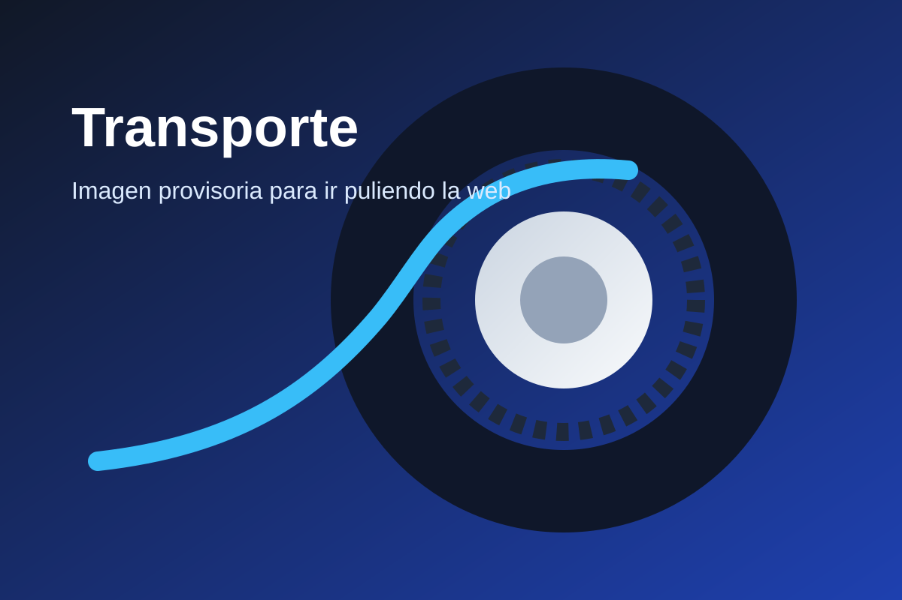
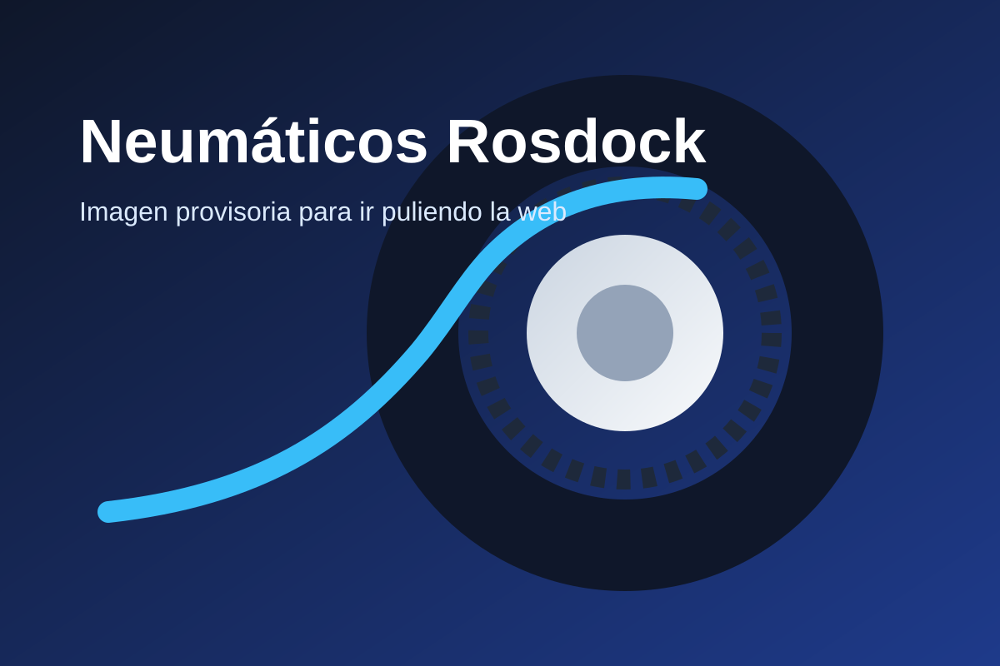
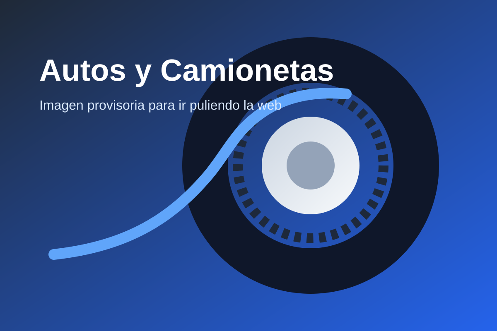
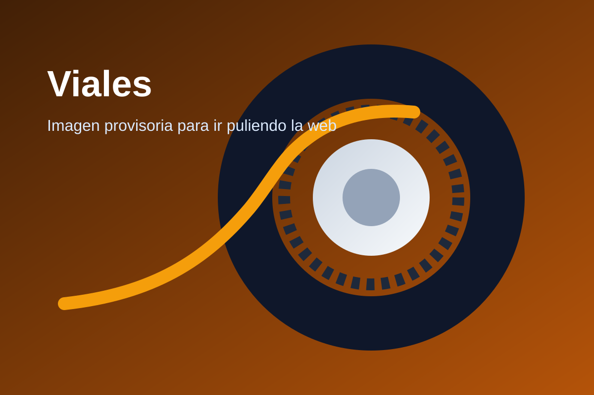
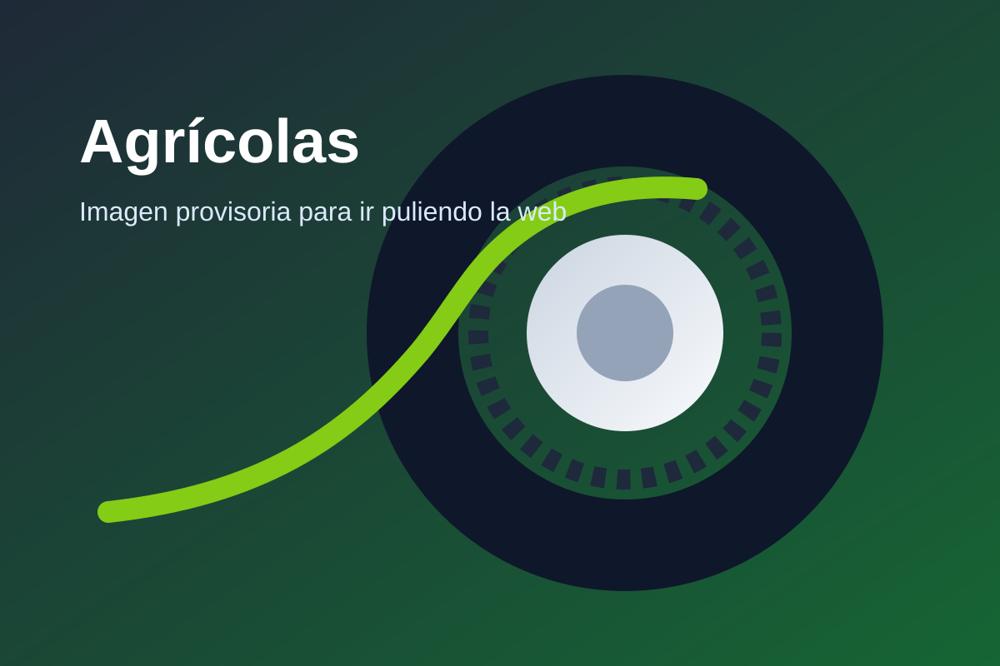

Línea comercial
Transporte
Neumáticos para camión, logística y uso intensivo con foco en rendimiento y durabilidad.
Ver línea →Una web más sólida, con presencia de marca y foco comercial. Elegí la línea que necesitás y entrá a su página específica para seguir puliéndola con productos, marcas y medidas reales.

Cada categoría abre una página distinta. Por ahora dejé una imagen relacionada de apoyo para que la web ya se vea armada y profesional mientras seguimos refinando contenido real.

Neumáticos para camión, logística y uso intensivo con foco en rendimiento y durabilidad.
Ver línea →
Opciones para uso particular, SUV, pick-ups y aplicaciones de trabajo liviano.
Ver línea →
Soluciones para maquinaria vial y operaciones de exigencia en obra y movimiento de suelos.
Ver línea →
Neumáticos para autoelevadores, equipos industriales y necesidades de planta o depósito.
Ver línea →
Cubiertas para maquinaria agrícola y aplicaciones de campo con tracción y robustez.
Ver línea →Rosdock combina respuesta comercial ágil, atención personalizada y una presentación más seria para transmitir confianza desde el primer segundo.
La web ya está preparada para sumar marcas, medidas, fichas y catálogo real. Mientras tanto, el canal directo de cierre queda bien visible.